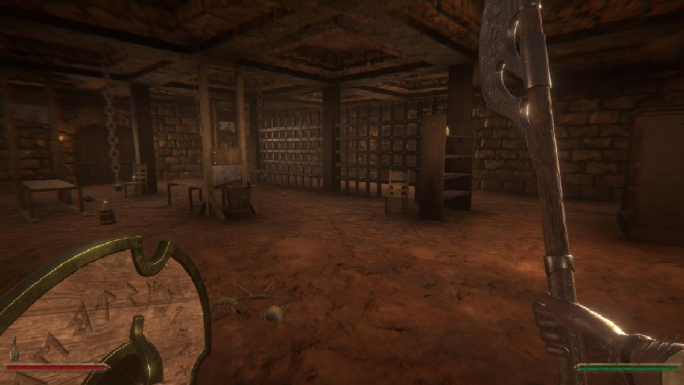

SUMMARY
SkullBound is a singleplayer dungeon crawler. You fight through rooms filled with skeletons and other monsters. With an end boss at the end of every floor
MY WORK
I've worked on skullbound for 10 weeks with a small group of students. I was the lead programmer. i am responsible for most of the programming. i worked on the dungeon generation, a mini map where you can see where you have been, an A* pathfinder for the AI, the leveling through floors, and the code behind the UI.